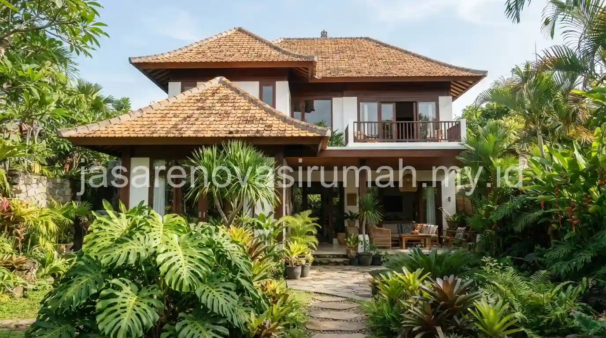
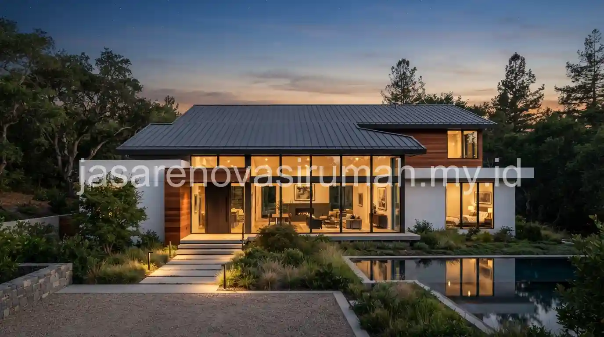

Jenis atap rumah yang umum digunakan di Indonesia meliputi genteng tanah liat, genteng beton, atap metal, dan atap dak beton datar, dengan karakteristik ketahanan panas dan curah hujan yang berbeda-beda sesuai kebutuhan iklim tropis.
Pemilihan jenis atap yang tepat tidak hanya memengaruhi tampilan rumah, tetapi juga kenyamanan suhu ruangan di bawahnya dan daya tahan terhadap curah hujan tinggi sepanjang tahun.
Apa Saja Jenis Atap Rumah yang Umum Digunakan di Indonesia dan Karakteristiknya?
Empat jenis atap yang paling umum digunakan pada rumah tinggal di Indonesia adalah genteng tanah liat, genteng beton, atap metal (baja ringan berlapis), dan atap dak beton datar.
Berikut perbandingan karakteristik masing-masing jenis atap:
| Jenis Atap | Karakteristik | Estimasi Perawatan |
|---|---|---|
| Genteng tanah liat | Alami meredam panas, klasik, cukup berat | Cek pergeseran genteng tiap musim hujan |
| Genteng beton | Lebih kuat dan seragam dari tanah liat, tahan lama | Minim perawatan, sesekali cek nat antar genteng |
| Atap metal (baja ringan) | Ringan, pemasangan cepat, perlu lapisan peredam panas | Cek karat pada sambungan secara berkala |
| Dak beton datar | Bisa dimanfaatkan sebagai rooftop, kesan modern | Wajib waterproofing berkala agar tidak bocor |
Pemilihan jenis atap sebaiknya juga mempertimbangkan struktur rangka atap yang akan menopangnya, karena genteng tanah liat dan beton memiliki bobot yang jauh lebih berat dibanding atap metal, sehingga membutuhkan perhitungan rangka yang berbeda.
Jenis Atap Mana yang Paling Cocok untuk Iklim Tropis dengan Panas dan Hujan Tinggi?
Genteng tanah liat secara alami memiliki kemampuan meredam panas yang baik karena sifat material yang berpori, sementara atap metal memerlukan tambahan lapisan insulasi agar tidak membuat ruangan di bawahnya terasa panas saat siang hari.
Untuk kawasan dengan curah hujan tinggi, kemiringan atap yang cukup curam lebih disarankan agar air hujan dapat mengalir dengan cepat dan tidak menggenang, terutama untuk jenis genteng yang mengandalkan sistem tumpang tindih (overlap) seperti genteng tanah liat dan beton.
Atap dak beton datar tetap bisa digunakan di iklim tropis asalkan sistem waterproofing dan kemiringan minimal untuk drainase dirancang dengan benar oleh tim konstruksi berpengalaman.
Bagaimana Memilih Kemiringan Atap yang Tepat agar Tahan Curah Hujan Tinggi?
Kemiringan atap yang disarankan untuk genteng tanah liat dan beton umumnya berkisar antara 30 hingga 40 derajat, sementara atap metal bisa menggunakan kemiringan lebih landai tergantung spesifikasi produk yang digunakan.
Beberapa pertimbangan dalam menentukan kemiringan atap:
- Kemiringan terlalu landai pada genteng tumpang tindih berisiko menyebabkan air merembes masuk saat hujan deras disertai angin kencang.
- Kemiringan terlalu curam bisa menambah kebutuhan material dan mempersulit proses perawatan atap di kemudian hari.
- Untuk atap dak beton datar, kemiringan minimal tetap diperlukan meski terlihat rata, guna mengalirkan air menuju saluran pembuangan.

Perencanaan struktur atap sebaiknya dilakukan bersamaan dengan perhitungan struktur bangunan secara keseluruhan, termasuk kesesuaiannya dengan jenis pondasi rumah yang digunakan, karena bobot atap turut memengaruhi beban total yang harus ditopang struktur di bawahnya.
Kesalahan Umum Saat Memilih Jenis Atap Rumah
Kesalahan yang paling sering terjadi adalah memilih jenis atap hanya berdasarkan tampilan tanpa mempertimbangkan bobot material dan kesiapan struktur rangka atap yang akan menopangnya.
Kesalahan lain yang perlu dihindari:
- Menggunakan atap metal tanpa lapisan peredam panas pada rumah dengan plafon rendah.
- Mengabaikan sistem talang air pada perencanaan atap sejak awal.
- Tidak memperhitungkan kemiringan minimal yang disyaratkan untuk masing-masing jenis penutup atap.
Pada akhirnya, memilih jenis atap rumah yang tepat untuk iklim tropis membutuhkan pertimbangan antara ketahanan panas, kekuatan terhadap curah hujan tinggi, dan kesesuaian dengan struktur bangunan secara keseluruhan.
Untuk memastikan pemilihan atap sesuai kondisi rumah Anda, konsultasikan kebutuhan ini dengan tim jasa kontraktor rumah kami yang dapat memberikan rekomendasi sesuai anggaran dan kondisi struktur bangunan.